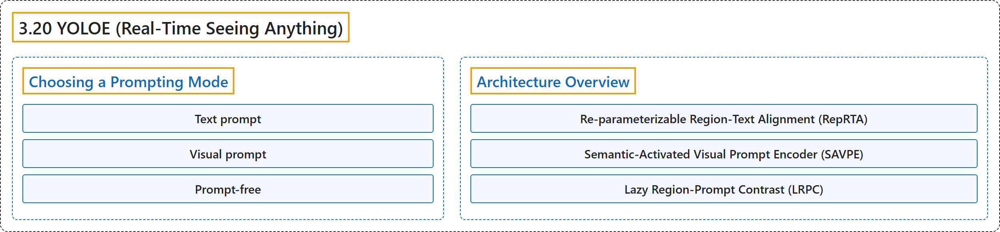

3.20 YOLOE (Real-Time Seeing Anything)
Classification

Glossary
| Term | Definition | 中文翻译 | Source |
|---|---|---|---|
| 3.20 YOLOE (Real-Time Seeing Anything) YOLOE（实时看见一切） |
"Ultralytics YOLOE (Real-Time Seeing Anything) is an open-vocabulary detection and instance segmentation model: instead of a class list fixed at training time, it takes the categories you want at inference time, as a text prompt, a visual example, or a built-in 4,585-name vocabulary." | Ultralytics YOLOE（实时看见一切）是一个开放词汇的检测和实例分割模型：它不用训练时固定的类别表，而是在推理时接收你想要的类别，形式可以是文本提示、视觉示例或内置的 4,585 个名称的词表。 | Ultralytics, n.d., "YOLOE: Real-Time Open-Vocabulary Detection and Segmentation", para. 1 |
| Choosing a Prompting Mode 选择提示模式 |
(context) "YOLOE supports three prompting modes, and the choice decides which checkpoint you load and what your class labels look like." | （语境）YOLOE 支持三种提示模式，所选模式决定你加载哪个检查点以及类别标签是什么样子。 | Ultralytics, n.d., "Choosing a Prompting Mode", para. 1 |
| Text prompt 文本提示 |
(context) "You can describe the target in words — the usual choice" | （语境）当你能用文字描述目标时使用，这是通常的选择 | Ultralytics, n.d., "Choosing a Prompting Mode", table, row 1 |
| Visual prompt 视觉提示 |
(context) "You cannot put the target into words: a specific part, logo, or defect" | （语境）当你无法用文字表述目标时使用：某个特定部件、标志或缺陷 | Ultralytics, n.d., "Choosing a Prompting Mode", table, row 2 |
| Prompt-free 无提示 |
(context) "You are cataloging or exploring and do not know what to look for in advance" | （语境）当你在编目或探索，事先不知道要找什么时使用 | Ultralytics, n.d., "Choosing a Prompting Mode", table, row 3 |
| Architecture Overview 架构概览 |
"YOLOE keeps the standard YOLO structure — a convolutional backbone for feature extraction, a neck for multi-scale fusion, and an anchor-free, decoupled head predicting classes and boxes — and adds three modules, one per prompting mode:" | YOLOE 保留了标准的 YOLO 结构（用于特征提取的卷积骨干网络、用于多尺度融合的颈部，以及预测类别和框的无锚框解耦检测头），并增加了三个模块，每种提示模式一个： | Ultralytics, n.d., "Architecture Overview", para. 1 |
| Re-parameterizable Region-Text Alignment (RepRTA) 可重参数化区域-文本对齐（RepRTA） |
"Re-parameterizable Region-Text Alignment (RepRTA) refines text embeddings from CLIP through a small auxiliary network." | 可重参数化区域-文本对齐（RepRTA）负责通过一个小型辅助网络细化来自 CLIP 的文本嵌入。 | Ultralytics, n.d., "Architecture Overview", item 1 |
| Semantic-Activated Visual Prompt Encoder (SAVPE) 语义激活视觉提示编码器（SAVPE） |
"Semantic-Activated Visual Prompt Encoder (SAVPE) encodes semantic and activation features from an example box, conditioning the model on objects that look like it." | 语义激活视觉提示编码器（SAVPE）负责对示例框中的语义特征和激活特征进行编码，使模型以与之外观相似的物体为条件。 | Ultralytics, n.d., "Architecture Overview", item 2 |
| Lazy Region-Prompt Contrast (LRPC) 惰性区域-提示对比（LRPC） |
"Lazy Region-Prompt Contrast (LRPC) matches region embeddings against a built-in 4,585-name vocabulary, so prompt-free checkpoints recognize objects with no external prompt and no text encoder." | 惰性区域-提示对比（LRPC）负责把区域嵌入与内置的 4,585 个名称的词表进行匹配，使无提示检查点无需外部提示、也无需文本编码器就能识别物体。 | Ultralytics, n.d., "Architecture Overview", item 3 |
References
Ultralytics. (n.d.). YOLOE: Real-Time Open-Vocabulary Detection and Segmentation. Ultralytics YOLO Docs (ultralytics 8.4.194). Retrieved October 31, 2026, from https://docs.ultralytics.com/models/yoloe/